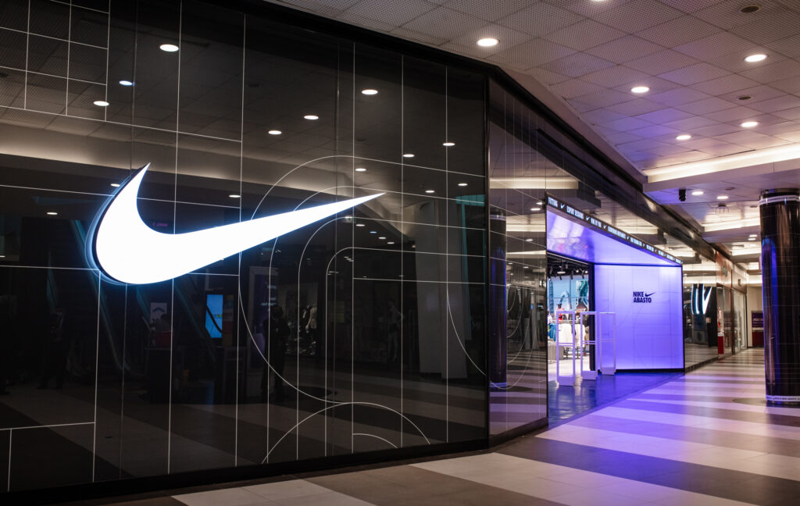

NIKE
Fue en 1968 cuando Phil Knight funda la marca Nike, cuyo nombre se basaba en la diosa griega de la victoria «Niké». Pero no fue hasta 1971 cuando adoptó esta denominación. En sus 3 primeros años de existencia la marca se hacía llamar «Blue Ribbons Sports».
El logotipo, curiosamente, fue desarrollado por una estudiante de diseño gráfico: Carolyn Davidson. Phil y Carolyn se conocieron en la universidad del estado de Portland, donde él impartía clases de contabilidad. Davidson le presentó su factura por un total de 35 dólares por su trabajo (aunque en 1983, Knight le dio a Davidson un anillo de oro y un sobre lleno de acciones de acciones de Nike a manera de agradecimiento y bonificación por su trabajo realizado). La principal premisa exigida por Phil Knight era que el logotipo transmitiese movimiento. Carolyn Davidson afirma que se basó en el ala de la diosa griega «Niké» para diseñar el símbolo dinámico que hoy conocemos (más en EEUU) como el «Swoosh». Aparentemente, Knight no estaba demasiado contento con el resultado presentado por Davidson, pero la necesidad urgente de tener un logo le hizo aceptar ese diseño como definitivo. Afirmaba: «No estoy enamorado del logo, pero me voy a acostumbrar”.
ADIDAS

PUMA